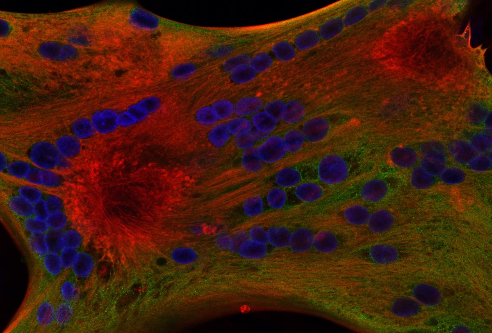

Sumarse al laboratorio

Dos posiciones de posgrado, a partir del otoño (agosto) de 2027
Distrofia muscular de Duchenne. Es la posición que buscamos con más interés. Cultivo de células musculares humanas, organoides y fisiología ex vivo de ratón. La pregunta es cómo falla el manejo del calcio en el músculo distrófico, y qué le hace la carga mecánica. El músculo liso es la parte más nueva. Está afectado en los pacientes, en el intestino, la vejiga y los vasos sanguíneos, y casi nadie lo estudia. Ahora estamos caracterizando músculo liso humano sano y construyendo su contraparte distrófica, de modo que quien llegue en 2027 empieza después de la caracterización y antes de la biología. Le conviene a alguien que quiera trabajar con células y tejidos. También a alguien dispuesto a construir una medición cuando no existe.
Orientación magnética. Cómo un sistema nervioso detecta el campo magnético terrestre. Estamos abiertos a esta posición para la persona adecuada. El énfasis tiene que estar en el mecanismo molecular y fisiológico, no solo en la conducta. Hay que esperar genética, imagen de calcio y electrofisiología. Nadie en el laboratorio trabaja hoy en esta pregunta, así que quien la tome la tiene para sí.
Una posición es de doctorado y la otra de maestría. Si tus intereses quedan cerca de alguna de las dos sin coincidir exactamente, escribe igual. Di en qué quieres trabajar y qué título buscas.
Terreno fértil
A cada estudiante le digo lo mismo. Este laboratorio es terreno fértil. Las preguntas que trabajamos, cómo los seres vivos perciben el mundo físico y actúan sobre él, y qué pasa cuando ese circuito se rompe, son lo bastante ricas como para que a una persona capaz y trabajadora nunca le falte algo real que hacer, y el laboratorio está organizado para que lo que haces se convierta en algo que puedes mostrar. Desde 2015 se han formado aquí 230 personas. Cuatro de cada diez de nuestros estudiantes de grado se fueron con un póster que presentaron ellos mismos, uno de cada seis con su nombre en un artículo arbitrado, y algunos dieron charlas. De los diez estudiantes de posgrado que terminaron un título aquí, todos son autores de al menos un artículo, y un estudiante de doctorado se va con alrededor de cuatro artículos y cerca de treinta presentaciones. Diecisiete de los veintitrés artículos que el laboratorio publicó desde 2015 tienen a un estudiante como primer autor, dos de ellos estudiantes de secundaria. De los egresados cuyo camino podemos seguir, casi nueve de cada diez siguieron en la ciencia. Todo esto se puede verificar: los artículos, las presentaciones y los egresados están en este sitio, con nombre y apellido.
Nada de eso te pasa por el hecho de entrar. Les pasa a quienes llegan queriéndolo y hacen el trabajo, y en este laboratorio, como en todo campo que alguien haya medido, una minoría produce la mayor parte de lo que se hace. Lo que sí puedo prometer es que aquí la puerta está más abierta que en la mayoría de los lugares, y que al cruzarla vas a encontrar las preguntas, los instrumentos, la guía y el tiempo que hacen falta para mostrar lo que puedes hacer. La página de egresados es la prueba de que ha sido cierto para otros. Si es cierto para ti es la parte que te toca a ti.
Dónde está el peso del laboratorio, sin rodeos
La distrofia muscular de Duchenne concentra a la mayor parte de la gente y del financiamiento. La mayoría de los candidatos llega queriendo trabajar en eso, y nuestro reclutamiento se inclina hacia allí. El lado sensorial y magnético ha producido una parte comparable de nuestras publicaciones, con una fracción de las manos. Está poco poblado, no terminado. Aquí se ofrecen tanto un proyecto concurrido y bien sostenido como una pregunta que tendrías en gran medida para ti. No son la misma experiencia. Preferimos que elijas con eso a la vista.
Vas a construir cosas
Nuestras preguntas suelen necesitar instrumentos que no existen, o que cuestan más de lo que podemos justificar. Así que el laboratorio los construye. Ensayos de conducta. Un rastreador de gusanos que cuesta unos treinta dólares. Equipos de campo magnético. El animal reportero RGBCaMP. Y WINK, la plataforma de imagen y cinemática sobre la que hoy funciona el laboratorio. Cerca de una quinta parte de lo que publicamos es una herramienta, un ensayo o un método, no un resultado. No hace falta llegar sabiendo hacer nada de eso. Hace falta que la perspectiva te resulte interesante y no alarmante. La alternativa a construir el instrumento suele ser no hacer el experimento.
Ser visto, no solo ser bueno
Ser excelente y ser notado son cosas distintas, y la segunda no es automática. Una universidad pequeña resulta ser buena para la segunda. Hay más maneras de destacarse aquí que en una institución grande, y menos gente compitiendo por cada una. Nuestros estudiantes ganan premios de póster, se ubican en concursos de imagen científica y obtienen becas internas. Escribir esas becas internas no es opcional en este laboratorio. Cada estudiante de posgrado se presenta, lo que asegura su financiamiento de verano y le deja una propuesta financiada en su historial antes de terminar. Los estudiantes de aquí suelen graduarse con varias distinciones, y cada una es otro lugar donde alguien de afuera puso su nombre por escrito.
Qué buscamos
Experiencia previa de investigación, por la vía que sea. Y el hábito de seguir una pregunta sin que nadie te persiga. Lo más útil que puedes contarnos en un primer correo es simple. ¿Qué fue lo último que hiciste en una mesada, o que construiste, sin que nadie te lo pidiera?
Las dos posiciones tienen financiamiento. Viene de asistencias de investigación con fondos de proyectos y de asistencias de docencia a través de la Escuela de Ciencias Biológicas. Te diremos con claridad cuál se te ofrece, y por cuánto tiempo, antes de que te comprometas a nada.
Cómo escribir
Escribe a avidal@ilstu.edu, en español o en inglés. Di cuál de las dos direcciones te interesa, y por qué. Di qué has hecho y qué quieres ser capaz de hacer al final. Un CV ayuda. Una carta genérica dirigida a ningún laboratorio en particular, no.
Escribir primero no es opcional. El programa no admite estudiantes que no tengan un laboratorio que los reciba, así que el correo va antes que la solicitud. Los plazos y requisitos están más abajo.
Para quienes escriben desde América Latina
Yo soy uruguayo y me formé en el exterior, así que conozco el camino. Algunas cosas que conviene saber antes de escribir. La admisión es a un programa de posgrado con financiamiento: los estudiantes admitidos reciben una asistencia de docencia o de investigación que cubre la matrícula y paga un estipendio mensual para vivir, y con ella se tramita la visa de estudiante F-1. El GRE no es obligatorio. Sí hace falta una prueba de inglés (TOEFL, IELTS o Duolingo English Test; verifica en las páginas del programa cuál se acepta y el puntaje mínimo vigente), y la solicitud tiene un costo. Becas del país de origen, como ANII, Fulbright, CAPES o CNPq, se pueden combinar con el apoyo de aquí y fortalecen la candidatura, pero no son un requisito. Lo que más pesa es haber trabajado en un laboratorio y poder contarlo. Si tu inglés hablado no está donde quisieras, dilo; la conversación inicial puede ser en español y hay un año de cursos para ponerlo a punto. El plazo para empezar en agosto es el 1 de febrero del mismo año, y el primer correo conviene mandarlo varios meses antes.
Preguntas que la gente hace, y algunas que no
Abre las que te correspondan. Son las respuestas que daríamos por correo de todas formas.
¿Necesito experiencia con C. elegans?
No. El laboratorio trabaja con gusanos, líneas celulares musculares humanas y, desde 2027, preparaciones ex vivo de ratón. La posición de Duchenne es sobre todo de células y tejidos, no de gusanos. Lo que importa es que hayas trabajado en algo en una mesada y sepas qué se siente cuando un experimento no coopera.
¿Qué haría realmente en el primer año?
Una pieza de trabajo definida y terminable, junto con los cursos y el aprendizaje de los instrumentos con los que funciona el laboratorio. A quienes llegan se les da a propósito un alcance acotado y tratable. Un primer proyecto que no se puede completar enseña muy poco, y uno abierto es la forma más común en que un buen estudiante se estanca. El alcance se amplía una vez que has conseguido un resultado propio.
¿Y si nunca construí un instrumento?
Casi nadie llega habiendo construido uno. El rastreador de gusanos cuesta unos treinta dólares y es una primera construcción razonable. Lo que buscamos es tu reacción a la idea. Si la perspectiva de fabricar lo que necesitas te suena interesante y no alarmante, vas a estar bien.
No estoy seguro de si quiero una maestría o un doctorado.
Dilo en tu primer correo. Tenemos una de cada, así que la pregunta está abierta, no es incómoda. Una maestría aquí es una investigación completa con defensa, y es una vía que funciona hacia un doctorado en otro lugar. Cuatro de nuestros egresados de posgrado siguieron a programas doctorales, entre ellos en la Universidad de California en San Diego y en Loyola University Chicago. Elegir el título más largo porque parece más serio es una mala razón, y preferimos hablarlo antes de que te postules que dos años después.
Illinois State no es una universidad R1. ¿Importa?
Cambia algunas cosas y otras no. La cohorte es pequeña, así que trabajas directamente con el investigador principal y no a través de una capa de posdoctorados, y usas los instrumentos en lugar de hacer fila para ellos. Tenemos menos servicios centrales que una gran universidad de investigación, que es en parte por qué construimos los nuestros.
Lo que vale la pena revisar, en lugar de tomarlo por fe, es la producción. Diez estudiantes completaron un título de posgrado en este laboratorio. Los estudiantes de posgrado generan aquí una mediana de quince productos, contando pósters, charlas en congresos y artículos arbitrados. Un estudiante de maestría se va típicamente con unas trece presentaciones y uno o dos artículos. Un estudiante de doctorado se va con unas veintisiete presentaciones y cuatro artículos. Eso equivale a tres o cuatro productos por año en el laboratorio. Cada uno de los diez es autor de al menos un artículo arbitrado y al menos un póster. Diecisiete de los veintitrés artículos publicados desde 2015 tienen a un estudiante del laboratorio como primer autor, dos de ellos de secundaria. Los preprints y las publicaciones de software se cuentan aparte, y varios estudiantes los tienen también.
Tratamos ese historial como el punto central y no como un subproducto. Un producto es la evidencia duradera y verificable desde afuera de que terminaste algo, y cuáles importan depende de adónde vas. Para posiciones de investigación son los artículos y las presentaciones. Para la docencia es la tutoría y la enseñanza que realmente hiciste, que es por lo que nuestros estudiantes guían a estudiantes de grado y de secundaria en lugar de solo recibir guía. Contamos las charlas además de los pósters, porque dar una charla significa que un estudiante llegó lo bastante lejos como para pararse frente a una sala y sostenerla, que es una destreza distinta de producir un resultado. La lista de publicaciones y las presentaciones son públicas, así que puedes contar por tu cuenta. No todos los que empiezan un posgrado lo terminan, aquí ni en ningún lado, así que estas son las personas que completaron, no todas las que pasaron.
En cuanto a adónde va la gente, una exestudiante de grado de este laboratorio hizo un doctorado en Harvard y es investigadora posdoctoral allí, una egresada de posgrado es investigadora posdoctoral en Scripps Research, y otra asume una plaza de profesora asistente en 2027. Entre todos los egresados cuyo destino conocemos, el 89,1 por ciento siguió en ciencia, tecnología, ingeniería o matemática.
Hay un dato que conviene conocer antes de sopesar la pregunta. Los laboratorios de aquí publican más o menos lo mismo por investigador que los de universidades intensivas en investigación. En seis grandes universidades de investigación la cifra está entre cinco y diez artículos por investigador principal en la última década, y en Illinois State es de unos siete. La brecha en producción total entre los dos tipos de institución es sobre todo una diferencia en cuántos laboratorios hay, no en lo que produce cada uno. La página de egresados está para que verifiques nuestra parte en lugar de creernos.
¿Quién me paga, y por cuánto tiempo?
Todo estudiante admitido recibe apoyo, mediante una asistencia de docencia, una de investigación, o ambas, mientras siga cumpliendo los requisitos del programa. Las asistencias de investigación vienen de fondos de proyectos y las de docencia de la Escuela de Ciencias Biológicas. La mayoría de los estudiantes pasa por ambas a lo largo del título. Te diremos cuál se te ofrece, y por cuánto tiempo, antes de que te comprometas a nada.
¿Cómo me postulo concretamente, y cuándo?
Escríbeme primero. Es un prerrequisito, no una cortesía. El programa no admite a un estudiante sin un profesor dispuesto a recibirlo, así que el correo tiene que ocurrir antes de que valga la pena presentar la solicitud. La solicitud en sí va a la Escuela de Ciencias Biológicas, y la decisión de admisión es del programa, no mía. Lo que yo controlo es si hay lugar en este laboratorio.
El plazo para empezar en otoño (agosto) es el 1 de febrero, así que para empezar en 2027 es el 1 de febrero de 2027. Vas a necesitar certificados de estudios, un CV, una declaración de objetivos de dos páginas y tres cartas. El GRE es opcional y pesa poco. El mínimo declarado es un promedio de 3,0 sobre 4,0 en las últimas sesenta horas de grado, y el programa doctoral espera una experiencia de investigación previa considerable, sea de una maestría, de investigación de grado o de otro lugar.
Postulantes internacionales: el departamento tiene un contingente internacional grande, así que esto es rutina aquí y no una excepción, y el apoyo descrito arriba se aplica de la misma manera. También vas a presentar un puntaje de dominio del inglés, salvo que califiques para una exención. Los requisitos cambian, así que revisa la versión vigente en las páginas del programa: maestría en Ciencias Biológicas y doctorado en Ciencias Biológicas.
Investigación de grado
Recibimos estudiantes de grado de forma continua, y en particular animamos a quienes están en segundo y tercer año. Los estudiantes dedican típicamente unas diez horas por semana. Se los forma en todo el proyecto y no en una sola técnica. Eso significa leer la literatura, diseñar el experimento, hacerlo, analizarlo y presentarlo. La mayoría de nuestros estudiantes de grado presenta pósters, y una buena cantidad es coautora de artículos. Las horas de investigación se pueden tomar por créditos a través de BSC 290 o BSC 299.
A qué nos comprometemos a cambio
El laboratorio publica lo que espera de la gente, y lo que la gente puede esperar de vuelta, en cada nivel. También publicamos los planes individuales de desarrollo, que de verdad completamos. Son los documentos que un nuevo integrante lee antes de empezar. Están en inglés.
- Expectativas para estudiantes de posgrado (PDF)
- Plan individual de desarrollo, posgrado (PDF)
- Expectativas para estudiantes de grado (PDF)
- Plan individual de desarrollo, grado (PDF)
Quiénes han pasado por aquí
226 personas se han formado en este laboratorio desde 2015. De los egresados cuyo destino conocemos, el 89,1 por ciento siguió en ciencia, tecnología, ingeniería o matemática. Sabemos adónde fue el 81 por ciento. Una exestudiante de posgrado asume una plaza docente en 2027. La página de egresados indica adónde fue cada quien. Esa es la pregunta que vale la pena hacerle a cualquier laboratorio que estés considerando.